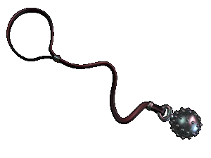

|
истень |
|
| ƒревнерусский кистень
-- идеальное вспомогательное оружие дл€
нанесени€ ловкого и внезапного удара в самой
тесной схватке. —редневековые кистени были кост€ными, железными и бронзовые, отделанными серебром или чернью и украшенные затейливым орнаментом. истени помечались родовыми и семейными знаками. ќни были, как правило, биконическими с пр€моугольным ушком и несколькими большими и малыми шипами. Ќепосредственно железные и бронзовые гири были гладкими, гранеными или с мелкими выпуклост€ми. |
|
“екст и
иллюстрации (c) 1997 Snowball Interactive Entertainment, Inc. |